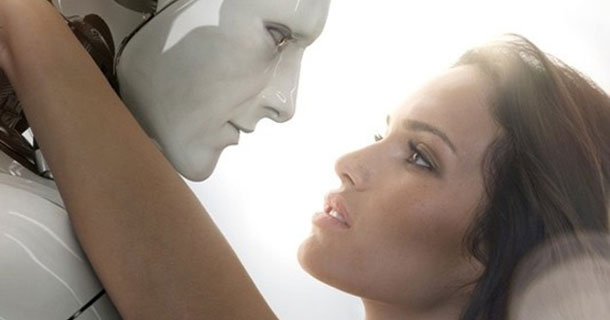

Ce site d'une complexité hors-pair est créé dans le but de s'entrainer à user des bonnes manières de la programmation et plus particulièrement à la maitrise de la sémantique original.
Semaine intensive
En effet dans le courrant de notre première semaine étudiante, à l'école Hetic situé au 27 Bis Rue du Progrès, 93100 Montreuil. Nous avons alors eu l'occasion de créer un court métrage de toutes pièces avec 5 collègues.
Les premiers instants de la colaboration ont laissé place à une présentation oral de chaque membre. Peu à peu, nous avons suivi une piste. 
Ce thème plaisait à l'ensemble du groupe mais plusieurs autres thèmes étaient également en concurrence. Plusieurs thèmes étaient sur la "select":